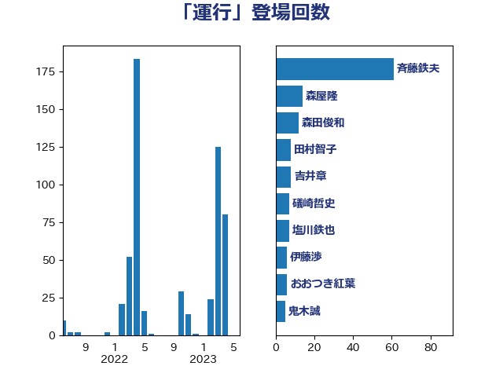

単語「運行」

| 斉藤鉄夫 | 公明党 | 61 回 |
| 森屋隆 | 立憲民主党 | 14 回 |
| 森田俊和 | 立憲民主党 | 12 回 |
| 田村智子 | 日本共産党 | 8 回 |
| 吉井章 | 自由民主党 | 8 回 |
| 礒崎哲史 | 国民民主党 | 7 回 |
| 塩川鉄也 | 日本共産党 | 7 回 |
| 伊藤渉 | 公明党 | 6 回 |
| おおつき紅葉 | 立憲民主党 | 6 回 |
| 鬼木誠 | 立憲民主党 | 5 回 |
| 山岸一生 | 立憲民主党 | 5 回 |
| 伊波洋一 | 無所属 | 5 回 |
| 高橋千鶴子 | 日本共産党 | 4 回 |
| 遠藤良太 | 日本維新の会 | 4 回 |
| 緒方林太郎 | 無所属 | 4 回 |
| 石井苗子 | 日本維新の会 | 4 回 |
| 浜地雅一 | 公明党 | 4 回 |
| 梅谷守 | 立憲民主党 | 4 回 |
| 一谷勇一郎 | 日本維新の会 | 4 回 |
| 高木かおり | 日本維新の会 | 3 回 |
| 輿水恵一 | 公明党 | 3 回 |
| 若松謙維 | 公明党 | 3 回 |
| 芳賀道也 | 国民民主党 | 3 回 |
| 米山隆一 | 立憲民主党 | 3 回 |
| 木村英子 | れいわ新選組 | 3 回 |
| 岸田文雄 | 自由民主党 | 3 回 |
| 山崎誠 | 立憲民主党 | 3 回 |
| 小島敏文 | 自由民主党 | 3 回 |
| 齋藤健 | 自由民主党 | 2 回 |
| 長谷川英晴 | 自由民主党 | 2 回 |
| 長浜博行 | 無所属 | 2 回 |
| 鈴木敦 | 国民民主党 | 2 回 |
| 道下大樹 | 立憲民主党 | 2 回 |
| 西銘恒三郎 | 自由民主党 | 2 回 |
| 林芳正 | 自由民主党 | 2 回 |
| 木村次郎 | 自由民主党 | 2 回 |
| 木原誠二 | 自由民主党 | 2 回 |
| 新垣邦男 | 立憲民主党 | 2 回 |
| 斎藤アレックス | 国民民主党 | 2 回 |
| 山本左近 | 自由民主党 | 2 回 |
| 尾身朝子 | 自由民主党 | 2 回 |
| 寺田稔 | 自由民主党 | 2 回 |
| 塩田博昭 | 公明党 | 2 回 |
| 城井崇 | 立憲民主党 | 2 回 |
| 坂本祐之輔 | 立憲民主党 | 2 回 |
| 国定勇人 | 自由民主党 | 2 回 |
| 加藤勝信 | 自由民主党 | 2 回 |
| 前川清成 | 日本維新の会 | 2 回 |
| 伊藤孝恵 | 国民民主党 | 2 回 |
| 丸川珠代 | 自由民主党 | 2 回 |
| 上野賢一郎 | 自由民主党 | 2 回 |
| こやり隆史 | 自由民主党 | 2 回 |
| 高橋光男 | 公明党 | 1 回 |
| 馬淵澄夫 | 立憲民主党 | 1 回 |
| 阿部司 | 日本維新の会 | 1 回 |
| 金子恭之 | 自由民主党 | 1 回 |
| 豊田俊郎 | 自由民主党 | 1 回 |
| 若宮健嗣 | 自由民主党 | 1 回 |
| 舞立昇治 | 自由民主党 | 1 回 |
| 福島伸享 | 無所属 | 1 回 |
| 石川香織 | 立憲民主党 | 1 回 |
| 石原正敬 | 自由民主党 | 1 回 |
| 石井拓 | 自由民主党 | 1 回 |
| 田中健 | 国民民主党 | 1 回 |
| 牧野たかお | 自由民主党 | 1 回 |
| 滝波宏文 | 自由民主党 | 1 回 |
| 渡辺猛之 | 自由民主党 | 1 回 |
| 浜口誠 | 国民民主党 | 1 回 |
| 浅野哲 | 国民民主党 | 1 回 |
| 浅川義治 | 日本維新の会 | 1 回 |
| 永岡桂子 | 自由民主党 | 1 回 |
| 榛葉賀津也 | 国民民主党 | 1 回 |
| 木原稔 | 自由民主党 | 1 回 |
| 日下正喜 | 公明党 | 1 回 |
| 徳永久志 | 立憲民主党 | 1 回 |
| 広瀬めぐみ | 自由民主党 | 1 回 |
| 平沼正二郎 | 自由民主党 | 1 回 |
| 平木大作 | 公明党 | 1 回 |
| 岩谷良平 | 日本維新の会 | 1 回 |
| 岡田直樹 | 自由民主党 | 1 回 |
| 山田勝彦 | 立憲民主党 | 1 回 |
| 山本順三 | 自由民主党 | 1 回 |
| 小池晃 | 日本共産党 | 1 回 |
| 小林鷹之 | 自由民主党 | 1 回 |
| 小宮山泰子 | 立憲民主党 | 1 回 |
| 室井邦彦 | 日本維新の会 | 1 回 |
| 大野泰正 | 自由民主党 | 1 回 |
| 和田義明 | 自由民主党 | 1 回 |
| 古賀之士 | 立憲民主党 | 1 回 |
| 中山展宏 | 自由民主党 | 1 回 |
| 下条みつ | 立憲民主党 | 1 回 |
| 三上えり | 立憲民主党 | 1 回 |
| たがや亮 | れいわ新選組 | 1 回 |